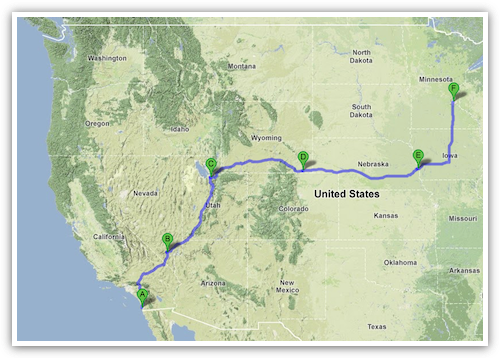

一、
从毕业去向确定之日起，我就想到也许可以一路开车从 LA 到达 Minneapolis。这样做除了有种种事务性的便利之外，当然主要是因为它设想起来很好玩，似乎又不是很难的样子。要是不自己开车，想办法把车子和行李运过去也不是不可行，但是放着这样一个驾车斜穿美国西部的机会不体验一次，显然没道理。
答辩之后就开始计划这件事情，在 google maps 上估算了一下，总共的车程在 30 小时到 35 小时之间，如果每天开六七个小时车，五天可以开完全程。我此前最多一天开过八九个小时的车，但是不可能天天如此。六七个小时在我的设想里，是一个可以坚持重复的程度。
于是就需要计划每天的歇息城市，也就是古人赶路时所谓的宿站和尖站。对着地图安排线路是一件很有趣味的事情，纵横驰骋都在指掌之间。西部地广人稀，可选的路线并不多，如果是在东部，这件事情估计还会更有趣。
为了避免路上出现意外，我多安排了一天作为机动时间。会不会有意外呢？出发之前反复在心里掂量。一个人带着很多行李开五天车，当然总会有各种不可预料的问题出现。能想到的除了带上药品和 AAA card，以及出发之前检查一下轮胎，似乎也没什么可以事先准备的了。
于是出门上路。既是出发，也是对洛杉矶的告别。
二、
头两天向北的路其实大部分以前都开过，直到开过 Utah 南部的国家公园才算是进入新鲜的领域。第一天路旁满眼所及几乎没有绿色，只有无边无际的戈壁滩。第二天开始有青草铺在山麓上，颜色淡淡的，也并不繁盛，但是天空极晴，让车窗外的原野有一种素静的风貌。
15 号公路一直座落在山谷里，左右都是草场和牧场，偶尔有大群的牛羊。越向北接近盐湖城，人烟就越茂密，山上的绿色也越多。但是自己也越来越疲惫，唯一的乐趣是看山上的云彩，那些云本来就介于白云和乌云之间，低低地飘过山麓就变成了雨。我一边开车一边想，是这就去大盐湖看一眼还是第二天早上再去，后来觉得湖上的夕阳应该会很漂亮，于是直奔大盐湖。
后来证明确实景色极佳，夕阳倒在其次，主要是云彩很美。白云乌云错落在湛蓝的天上，金色的阳光斜射进不同高度的云朵之间，折射出斑驳陆离的云影。加上远处山上的大雨，构成奇谲瑰丽的景色。湖面不如想象的大，但是也别有一番闲静悠远的情致（如果忽略湖边多到吓人的蚊子的话）。
回城一路电闪雷鸣，始终有一团乌云在前方却始终没有淋到自己身上，等回到盐湖城里已经入夜。行程完成了五分之二，并不轻松，但是也没有遇到太大的麻烦，唯一的问题（也是没有预料到的问题）是很多地方都只有汉堡可吃。一路吃汉堡又窝在驾驶座上开车的结果，是肠胃很不舒服。
三、
在盐湖城向东开上 80 号公路，进入 Wyoming。我此前对 Wyoming 近乎一无所知，甚至连它就在 Utah 东边都不知道。对这个州名仅有的印象来自于电影《断背山》，我记得其情节是发生在 Wyoming，但是又记得看到过介绍说电影本身取景并不在这个州，于是对这段行程还是毫无概念，只想着如果景色像电影里一样好看，那还真不错。
结果实际上完全不是一回事。这条公路一路向东，路边是一望无际的草原，没有山，没有河，没有树，没有人家，没有牧场，没有工业，没有农业，没有任何除了枯草之外的东西。我开着 cruise control，不用踩油门和刹车也几乎不用动方向盘，就这样一路向前。大地像是一个数学上抽象的平面，而公路是其上笔直的一条线。一个小时过去，两个小时过去，我越来越困和疲惫，肠胃也越来越难受。在单调的环境里坐着一动不动还不能转移注意力，这种滋味只有身历其境才能明白。
直到我觉得快要坚持不住的时候，终于有了一点好玩的事情出现，不是来自草原，而是来自天空。因为实在是太空旷，所以天上的每片云彩都被阳光在地上投下相应的影子。渐渐地出现了一些正在下雨的乌云，于是就相应能看到一个由雨水组成的雨柱连在天地之间。这样的景色在情理上自然而然，但是如果不是在这样空无一物的广袤大地上，决然不会呈现出如此奇特的效果。
到后来乌云越来越多，我就开始琢磨自己会不会撞进雨柱里。到太阳快落山的时候，公路不再是纯粹一条直线，天空里错落铺排着乌云和蓝天，雨柱像是构成天地间的一个迷宫，汽车沿着公路一会儿钻进雨里，一会儿回到晴天下面，雨中还时不时电闪雷鸣，像是某种电脑游戏场景一般。
这是极为难忘的情境，而且我至少不困了。
但是身体还是不舒服，等开到 Wyoming 的首府 Cheyenne （一个人口五万的小城，但是已经是全州最大的城市了）住下，只觉得比前两天都要累得多。洗了个热水澡，浑身都是软的。胃还是一阵阵难受。吃了点霍香正气滴丸睡下，又怎么也睡不踏实，半夜爬起来量了量体温，37.8℃。
明天怎么办？我心里一遍一遍琢磨。明天在旅馆休息一天在时间也来得及，但是万一病还是没好，后面就没有机动时间可以利用了。如果明天照常上路，可能病会加重，但是只要顺利到达 Omaha，最后一段路大不了分成两天来开，会更从容一点。
所以还是决定一大早就出门。早上应该体温不会太高，等下午开始发烧的时候争取已经到达 Omaha，那时候烧就烧去吧，大不了窝在旅馆里发汗。

四、
事实证明，药很对症，加上我知道这是肠胃感冒，刻意只吃了点蔬菜水果和酸奶，在路上就觉得自己渐渐精神变好了。Nebraska 和 Wyoming 在纬度上相差无几，景色却大不相同，一路青山绿水，还有小河沿着公路流淌，路边是典型的美式农村，大片庄稼牧场。这时候正是所有植物都郁郁葱葱的季节，一派可以入画的田园景色。
路上有了人烟，也就有广播可以听。有的时候是乡村音乐，有的时候是当地新闻，还有宗教电台，播放地区牧师的讲演。我在洛杉矶的时候开车一般只听古典音乐和 NPR 新闻，到了这里，才觉得自己隐约瞥见了那个我不太熟悉的美国。
在 Omaha 睡了一觉病就差不多好了，第五天转而北上，一路奔向 Minneapolis 终点。道路两侧的绿色越来越丰茂，湖也越来越多。到了 St. Paul 郊区的旅馆住在楼层很高的客房里，大玻璃窗外面远远望去是无边的森林，湖水若隐若现地点缀在其中。想起几天前车窗外的戈壁荒野，恍若隔世。
这一路向东向北两千余英里，从沙漠到草原，到田园和农庄，再到森林。五天的路程里常常觉得自己需要很努力地才能坚持下来，等到坚持下来结束了之后再回头看去，又觉得好像什么也没发生过一样。
旅行就是这样奇怪的一件事情。

{kind=link}
{kind=link}
June 12th, 2010 11:38
摸摸。虽然路上很辛苦，但是风景很好看，也算值了！
June 12th, 2010 12:22
我对明尼阿波利斯唯一的印象，就是皑皑白雪覆盖之下的一幢幢棋盘式布局的小房子。
June 12th, 2010 13:27
照片很漂亮
不过一个人旅行总是孤独的
希望你能尽快找到合适的另一半。
June 12th, 2010 14:19
非常喜欢博主的博客theme，很PL，回去模仿一个去，不建议吧！呵呵
June 12th, 2010 14:43
照片很漂亮
很喜欢你的文字的风格
去Minneapolis做研究去了？
June 12th, 2010 22:49
很喜歡這篇！第一張照片尤其好，可惜沒看到雨柱的照片，一定很壯觀吧。
在路上思考人生的大問題尤其清晰有效果。
June 13th, 2010 00:03
欢迎来到双城，这里是史努比的老家。
前一个月我做了一个跟你相反的旅行，从明尼到加州的coachella，剩下的记忆亮点大概就是内布拉斯加的屠宰场的恶臭，科罗拉多平原上云彩的投影，丹佛以后的雪山，犹他的山谷高速公路，近拉斯维加斯时的漫天星空，和第一眼夜晚看到拉斯维加斯时的灯海了。的确，完了后就像什么都没发生似的。
June 13th, 2010 02:06
照片很漂亮呢~yahoo
June 13th, 2010 12:54
仗着年轻身体好，生病了还敢开车。看来还是低碳生活比较健康些……
June 14th, 2010 10:58
Sigh，又让我想起去年的roadtrip，和你非常相似，从SD到Iowa，然后到Michigan。可惜从最开始策划好的十天旅游，因为被逼做实验，最后仅剩四天，除了一个玉石树国家公园，哪儿都没时间去。但是仅仅在路上，也是非常好的经历了。
还记得穿过莫哈维沙漠时，曾在一个visitor center停下来，虽然太阳下面有一百多度的高温，阴凉的地方被风一吹，竟然也很凉快。看着四野里的Joshua tree，想到六年的南加生活就这样无可逆转地被扔在身后，这些曾经无比熟悉的景观都要变得遥不可及，不是不伤感的。
June 15th, 2010 03:33
旅行就是这样一件奇怪的事情。
很喜欢这句。
喜欢你的字和片儿。
建议友情连接么？
June 17th, 2010 17:59
木遥老师，能不能奉献上面几张精彩照片的更大一点的版本？想用来做桌面呢，太漂亮了。
June 17th, 2010 22:47
Welcome to the Twin Cities! I came about your post from a friend’s sharing.
Want to know more Chinese? We have an organization that serves Chinese students & scholars in UMN. But you don’t have to be part of UMN to participate. Simply welcome.
I suppose you could see my email address in my comment.
Soon you will know what’s the so-called “Minnesota Nice”. :)
June 20th, 2010 14:10
第一张很美～美国可真大 呵呵
July 4th, 2010 13:12
粉丝一只，看博主的文章是种享受，而且还算半个校友。
July 7th, 2010 20:37
和《On the Road》里过节的时候一趟趟的开车拖家具，和《阿甘正传》里阿甘一路跑过去又跑过来，都还是有点子区别的。有味。
July 13th, 2010 15:56
哈哈，俺8月从VA去Minneapolis.
July 28th, 2010 13:05
[...] 今日见到了一则blog，向东北。何时订阅的，已是记不得。粗略读了，感觉很好。说的是他用了5天开车从 LA 去了 Minneapolis。篇末有这么一段： [...]